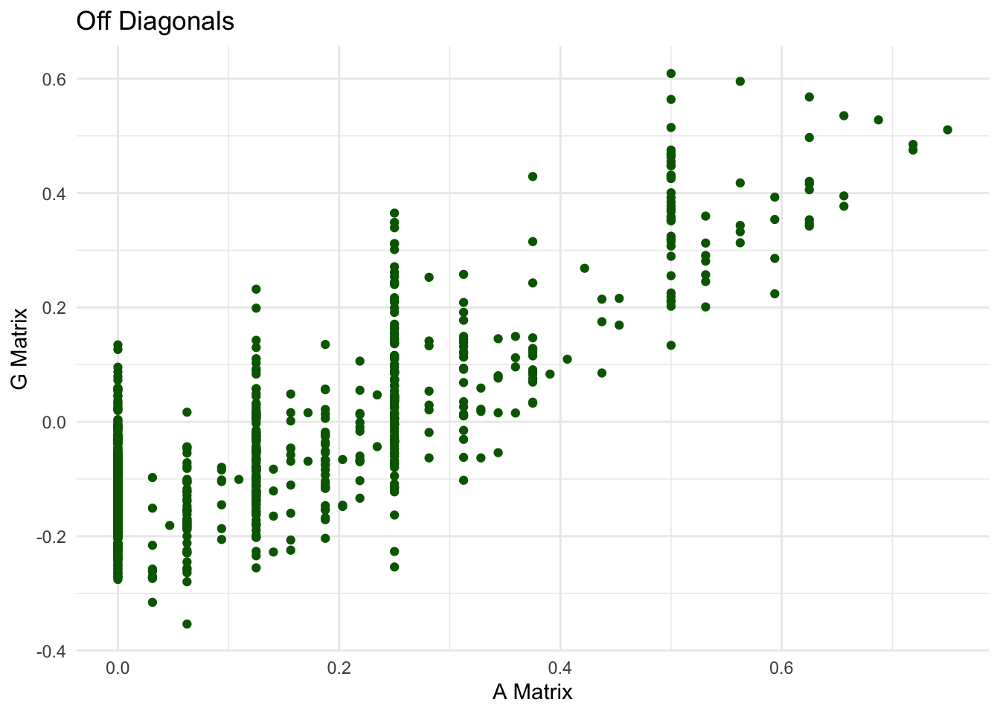
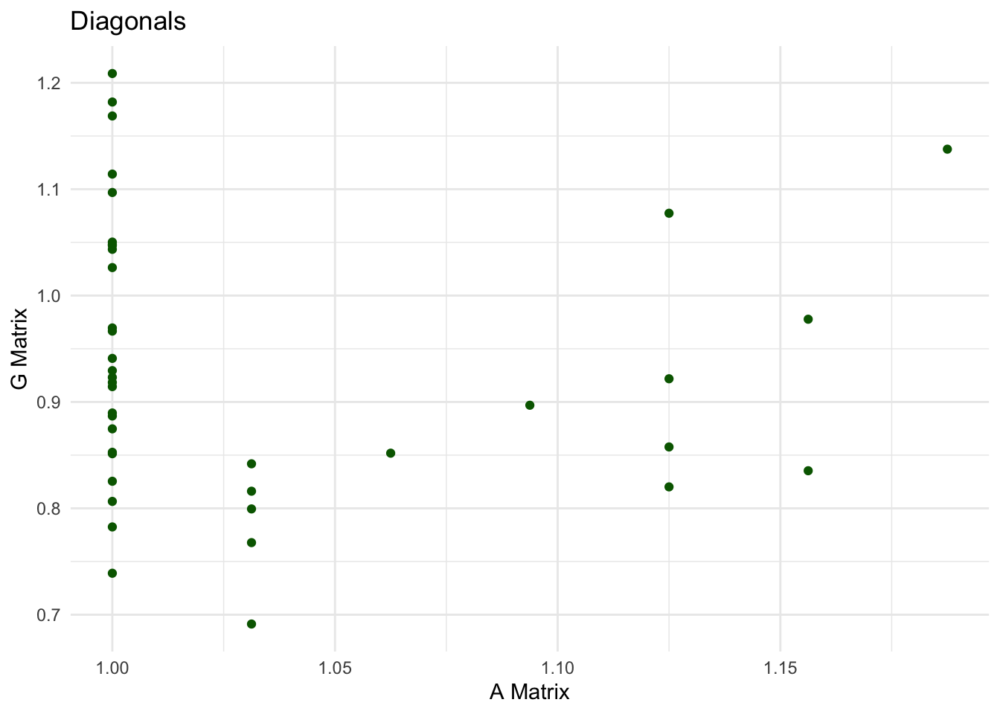

Last updated: 2025-02-26
Checks: 6 1
Knit directory: PLBRG_7170/
This reproducible R Markdown analysis was created with workflowr (version 1.7.1). The Checks tab describes the reproducibility checks that were applied when the results were created. The Past versions tab lists the development history.
The R Markdown is untracked by Git. To know which version of the R
Markdown file created these results, you’ll want to first commit it to
the Git repo. If you’re still working on the analysis, you can ignore
this warning. When you’re finished, you can run
wflow_publish to commit the R Markdown file and build the
HTML.
Great job! The global environment was empty. Objects defined in the global environment can affect the analysis in your R Markdown file in unknown ways. For reproduciblity it’s best to always run the code in an empty environment.
The command set.seed(20250128) was run prior to running
the code in the R Markdown file. Setting a seed ensures that any results
that rely on randomness, e.g. subsampling or permutations, are
reproducible.
Great job! Recording the operating system, R version, and package versions is critical for reproducibility.
Nice! There were no cached chunks for this analysis, so you can be confident that you successfully produced the results during this run.
Great job! Using relative paths to the files within your workflowr project makes it easier to run your code on other machines.
Great! You are using Git for version control. Tracking code development and connecting the code version to the results is critical for reproducibility.
The results in this page were generated with repository version ba34ff6. See the Past versions tab to see a history of the changes made to the R Markdown and HTML files.
Note that you need to be careful to ensure that all relevant files for
the analysis have been committed to Git prior to generating the results
(you can use wflow_publish or
wflow_git_commit). workflowr only checks the R Markdown
file, but you know if there are other scripts or data files that it
depends on. Below is the status of the Git repository when the results
were generated:
Ignored files:
Ignored: .DS_Store
Ignored: .Rhistory
Ignored: .Rproj.user/
Ignored: analysis/.DS_Store
Untracked files:
Untracked: analysis/Lab4_DataForBreedingValue.Rmd
Untracked: analysis/Lab_5.Rmd
Untracked: analysis/pset1_tpm.pdf
Untracked: analysis/pset2_tpm.Rmd
Untracked: code/Simulate_and_Solve.R
Untracked: data/Genomic_Rel.csv
Untracked: data/Pedigree.csv
Untracked: data/Pedigree_Rel.csv
Untracked: data/SNP_data.csv
Unstaged changes:
Modified: analysis/Lab3_ProgrammingAlphaSimR.Rmd
Modified: analysis/index.Rmd
Modified: analysis/lab2_MatrixAlgebra.Rmd
Modified: analysis/pset1_tpm.Rmd
Modified: output/QTLgenotypes.csv
Note that any generated files, e.g. HTML, png, CSS, etc., are not included in this status report because it is ok for generated content to have uncommitted changes.
There are no past versions. Publish this analysis with
wflow_publish() to start tracking its development.
library(tidyverse)── Attaching core tidyverse packages ──────────────────────── tidyverse 2.0.0 ──
✔ dplyr 1.1.4 ✔ readr 2.1.5
✔ forcats 1.0.0 ✔ stringr 1.5.1
✔ ggplot2 3.5.1 ✔ tibble 3.2.1
✔ lubridate 1.9.4 ✔ tidyr 1.3.1
✔ purrr 1.0.2
── Conflicts ────────────────────────────────────────── tidyverse_conflicts() ──
✖ dplyr::filter() masks stats::filter()
✖ dplyr::lag() masks stats::lag()
ℹ Use the conflicted package (<http://conflicted.r-lib.org/>) to force all conflicts to become errorslibrary(here)here() starts at /Users/tm639/Documents/Github/PLBRG_7170here::i_am("analysis/pset2_tpm.Rmd")here() starts at /Users/tm639/Documents/Github/PLBRG_7170Read in the file “Pedigree.csv” and write an R function to calculate the additive relationships (first calculate the coefficients of coancestry and then multiply by 2 to get the additive relationships) (5 pts)
ped_data <- read_csv(here::here("data/Pedigree.csv"))New names:
Rows: 40 Columns: 4
── Column specification
──────────────────────────────────────────────────────── Delimiter: "," dbl
(4): ...1, id, seedPar, pollenPar
ℹ Use `spec()` to retrieve the full column specification for this data. ℹ
Specify the column types or set `show_col_types = FALSE` to quiet this message.
• `` -> `...1`str(ped_data)spc_tbl_ [40 × 4] (S3: spec_tbl_df/tbl_df/tbl/data.frame)
$ ...1 : num [1:40] 1 2 3 4 5 6 7 8 9 10 ...
$ id : num [1:40] 1 2 3 4 5 6 7 8 9 10 ...
$ seedPar : num [1:40] 0 0 0 0 0 0 0 0 0 0 ...
$ pollenPar: num [1:40] 0 0 0 0 0 0 0 0 0 0 ...
- attr(*, "spec")=
.. cols(
.. ...1 = col_double(),
.. id = col_double(),
.. seedPar = col_double(),
.. pollenPar = col_double()
.. )
- attr(*, "problems")=<externalptr> coef_coanc_mat <- matrix(data=NA,nrow=nrow(ped_data), ncol = nrow(ped_data))
founders <- ped_data$id[which(ped_data$seedPar==0 & ped_data$pollenPar==0)]
coef_coanc_mat[1:length(founders),1:length(founders)]=0
diag(coef_coanc_mat)[founders]=0.5
for (i in (length(founders) + 1):nrow(ped_data)){
for (j in 1:(i - 1)){
i_seedpar <- as.numeric(ped_data[i,"seedPar", drop=TRUE])
i_pollenpar <- as.numeric(ped_data[i,"pollenPar", drop=TRUE])
fdv <- coef_coanc_mat[i_pollenpar,j]
fsv <- coef_coanc_mat[i_seedpar,j]
fuv <- 1/2*(fdv+fsv)
coef_coanc_mat[i,j]=fuv
coef_coanc_mat[j,i]=fuv
}
i_seedpar <- as.numeric(ped_data[i,"seedPar", drop=TRUE])
i_pollenpar <- as.numeric(ped_data[i,"pollenPar", drop=TRUE])
fsd <- coef_coanc_mat[i_seedpar,i_pollenpar]
coef_coanc_mat[i,i]= 1/2*(1+fsd)
}
a_mat <- coef_coanc_mat*2Check accuracy of a mat compared to provided pedigree matrix
ped_mat <- as.matrix(read_csv(here::here("data/Pedigree_Rel.csv")))New names:
Rows: 40 Columns: 41
── Column specification
──────────────────────────────────────────────────────── Delimiter: "," dbl
(41): ...1, 1, 2, 3, 4, 5, 6, 7, 8, 9, 10, 11, 12, 13, 14, 15, 16, 17, 1...
ℹ Use `spec()` to retrieve the full column specification for this data. ℹ
Specify the column types or set `show_col_types = FALSE` to quiet this message.
• `` -> `...1`ped_mat <- ped_mat[,2:41]
sum(a_mat-ped_mat)[1] 0These matrices are the same!
Read in the file “SNP_data.csv” and write an R function to calculate the genomic relationship matrix. (5 pts)
snp_data <- read_csv(here::here("data/SNP_data.csv"))New names:
Rows: 40 Columns: 9801
── Column specification
──────────────────────────────────────────────────────── Delimiter: "," dbl
(9801): ...1, 1_4, 1_6, 1_7, 1_9, 1_10, 1_12, 1_14, 1_15, 1_16, 1_18, 1_...
ℹ Use `spec()` to retrieve the full column specification for this data. ℹ
Specify the column types or set `show_col_types = FALSE` to quiet this message.
• `` -> `...1`snp_data <- snp_data[,2:ncol(snp_data)]
## Center marker scores on each marker mean
z <- as.matrix(apply(snp_data, 2, function(col) col-mean(col)))
## Calculate p and 1-p for each marker
MAF <- function(snp_mat){
pm <- c()
for (i in 1:ncol(snp_mat)){
ref_allele <- (sum(snp_mat[,i]==0)*2+sum(snp_mat[,i]==1))/(nrow(snp_mat)*2)
alt_allele <- (sum(snp_mat[,i]==2)*2+sum(snp_mat[,i]==1))/(nrow(snp_mat)*2)
pm[i] <- min(c(ref_allele,alt_allele))
}
return(pm)
}
p <- MAF(snp_data)
q <- 1-p
scaling_factor <- 2*sum(p*q)
G <- z%*%t(z) / scaling_factor
G <- round(G,9)Check accuracy of g mat compared to provided GRM matrix
grm <- as.matrix(read_csv(here::here("data/Genomic_Rel.csv")))New names:
Rows: 40 Columns: 41
── Column specification
──────────────────────────────────────────────────────── Delimiter: "," dbl
(41): ...1, 1, 2, 3, 4, 5, 6, 7, 8, 9, 10, 11, 12, 13, 14, 15, 16, 17, 1...
ℹ Use `spec()` to retrieve the full column specification for this data. ℹ
Specify the column types or set `show_col_types = FALSE` to quiet this message.
• `` -> `...1`grm <- grm[,2:ncol(grm)]
grm <- round(grm,9)
sum(G-grm)[1] 0These matrices are the same!
Plot the off diagonals of the pedigree relationship matrix (x-axis) and the genomic relationship matrix (y-axis). Identify at least 1 difference and provide an explanation (2 pts)
offDiag <- function(relMat){
return(c(relMat[upper.tri(relMat)]))
}
plotting_data <- data.frame(x=offDiag(a_mat), y=offDiag(G))
ggplot(data=plotting_data,aes(x=x, y=y))+
geom_point(color="darkgreen") +
labs(
x="A Matrix",
y="G Matrix",
title= "Off Diagonals"
) +
theme_minimal() Once difference that we see between the off-diagonal elements of the A and G matrices are that the A matrix elements take on discrete values where as the element from the G matrix are continuous. This is because the A matrix calculates expectations of coefficients of coancestry based on discrete assumptions of the starting founders having defined relatedness. Those starting assumptions fix discrete expectation values that any indiiduals can take at any level of relatedness. Since the GRM is the realized additive relationship matrix, each value deviates from the expectation, creating continuous values of additive relationship coefficients.
Plot the diagonals of the pedigree relationship matrix (x-axis) and the genomic relationship matrix (y-axis). Identify at least 1 difference and provide an explanation (2 pts)
plotting_data <- data.frame(x=diag(a_mat), y=diag(G))
ggplot(data=plotting_data,aes(x=x, y=y))+
geom_point(color="darkgreen") +
labs(
x="A Matrix",
y="G Matrix",
title= "Diagonals"
) +
theme_minimal()
One major difference that we see between the diagonals of the A and G matrix diagonals is that in the A matrix, values cannot extend below 0 whereas in the GRM, values dip as low as about 0.69. This is primarily due to the fact that the A matrix does not allow expected values of coefficients of coancestry to extend below 0, wheras in the realized G matrix, these can definitely fall below 0. This leads to negative values of inbreeding coefficients which create diagonal elements in the GRM that are below 1.
sessionInfo()R version 4.4.1 (2024-06-14)
Platform: aarch64-apple-darwin20
Running under: macOS 15.3.1
Matrix products: default
BLAS: /Library/Frameworks/R.framework/Versions/4.4-arm64/Resources/lib/libRblas.0.dylib
LAPACK: /Library/Frameworks/R.framework/Versions/4.4-arm64/Resources/lib/libRlapack.dylib; LAPACK version 3.12.0
locale:
[1] en_US.UTF-8/en_US.UTF-8/en_US.UTF-8/C/en_US.UTF-8/en_US.UTF-8
time zone: America/New_York
tzcode source: internal
attached base packages:
[1] stats graphics grDevices utils datasets methods base
other attached packages:
[1] here_1.0.1 lubridate_1.9.4 forcats_1.0.0 stringr_1.5.1
[5] dplyr_1.1.4 purrr_1.0.2 readr_2.1.5 tidyr_1.3.1
[9] tibble_3.2.1 ggplot2_3.5.1 tidyverse_2.0.0
loaded via a namespace (and not attached):
[1] sass_0.4.9 generics_0.1.3 stringi_1.8.4 hms_1.1.3
[5] digest_0.6.37 magrittr_2.0.3 evaluate_1.0.1 grid_4.4.1
[9] timechange_0.3.0 fastmap_1.2.0 rprojroot_2.0.4 workflowr_1.7.1
[13] jsonlite_1.8.9 promises_1.3.2 scales_1.3.0 jquerylib_0.1.4
[17] cli_3.6.3 crayon_1.5.3 rlang_1.1.4 bit64_4.5.2
[21] munsell_0.5.1 withr_3.0.2 cachem_1.1.0 yaml_2.3.10
[25] parallel_4.4.1 tools_4.4.1 tzdb_0.4.0 colorspace_2.1-1
[29] httpuv_1.6.15 vctrs_0.6.5 R6_2.5.1 lifecycle_1.0.4
[33] git2r_0.35.0 bit_4.5.0.1 fs_1.6.5 vroom_1.6.5
[37] pkgconfig_2.0.3 pillar_1.10.0 bslib_0.8.0 later_1.4.1
[41] gtable_0.3.6 glue_1.8.0 Rcpp_1.0.13-1 xfun_0.49
[45] tidyselect_1.2.1 rstudioapi_0.17.1 knitr_1.49 farver_2.1.2
[49] htmltools_0.5.8.1 labeling_0.4.3 rmarkdown_2.29 compiler_4.4.1